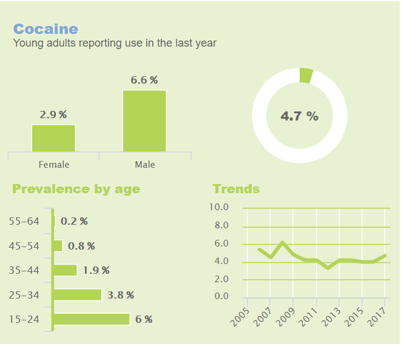
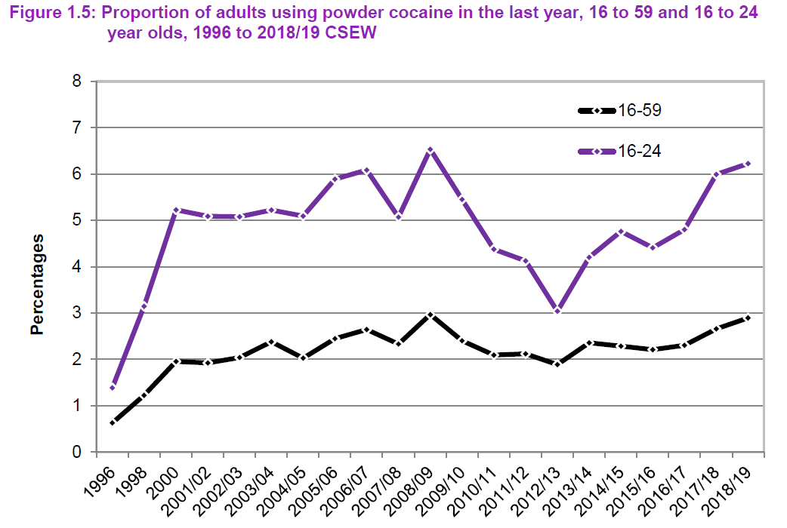

Cocaine
Cocaine, commonly known as coke, is a strong stimulant derived from the coca plant most frequently used as a recreational drug. It is normally snorted, inhaled as smoke, or dissolved and injected into a vein.
It is the second most popular recreational drug in the UK and is highly addictive due to its effect on the reward pathway in the brain. It acts by inhibiting the reuptake of certain neurotransmitters, resulting in a greater concentration of those neurotransmitters. This is what causes its effects.
(Wikipedia, 2020)
Effects
The effects that people are looking for when they take cocaine include:
- Increase in happiness
- Excitedness
- Waking them up
- Increased confidence
Its physical effects can include:
- Increased heart rate
- Increased body temperature
- Sickness feeling
- Paranoia
Typically, it can make users become chattier and more confident, but some people can become overconfident, arrogant, and angry. It can also increase a user’s sexual desires, and some people take it to have more intense sex.
These effects and their intensity tend to last longer if the user takes more but can also depend on whether they have eaten or taken other drugs. However, if used on its own its mental effects laid out above last around 20 to 30 minutes. Users tend to experience the physical effects, such as a faster heartbeat, after the mental effects have gone.
Some users find that using cocaine makes them feel down, anxious and/or paranoid the next day and sometimes even for a number of days after.
(Frank, 2020)
History
The stimulant effects of the coca leaf have been known in Latin America for at least 1,000 years, but cocaine itself was not successfully created until 1855. After this, its psychoactive effects began to be explored, and the drug rapidly established itself across the Wester world as both a medicine and a recreational substance.
Its spread was helped by its inclusion in products such as Mariani wine and the original Coca-Cola recipe. By 1879, cocaine was being used as a treatment for morphine addiction, and a few years later was introduced as a local anaesthetic. Subsequently, cocaine was employed as a diet drug and as a stimulant for soldiers and explorers.
Abuse of cocaine was recognised as a vice by the late Victorian era. Over the course of the 20th century, it grew to prominence as a highly desirable recreational substance associated with high living.
In modern times, cocaine use has reached pandemic levels, with between 14 and 21 million individuals using the drug each year worldwide, creating a market worth anywhere between 100 and 500 billion dollars.
Addiction
Cocaine is one of the most addictive and damaging recreational drugs. Many thousands of people in the UK struggle with cocaine addiction at a huge cost to themselves and their loved ones.
Addiction is fundamentally a disorder of the brain’s reward centres, repeated exposure over time to rewarding stimuli and behaviour will make the brain adjust to that excessive exposure. As these reward centres continue to adapt to repeated cocaine use, the user will become more and more reliant upon taking cocaine in order to experience pleasurable sensations associated with it.
Cocaine is not considered to be physically addictive. The dependence that can result because of cocaine use is primarily a psychological phenomenon, and the symptoms of withdrawal associated with cocaine abuse are consequently mainly psychological in nature.
(UK Rehab, 2020)
Statistics
Up to 3% of the population of the developed world has taken cocaine at some point. The use of the drug results directly in well over 4,000 deaths annually, whilst fatalities indirectly related to cocaine, including murders and accidents, are easily several times that number.
(European Monitoring Centre for Drugs and Drug Addiction, 2019)
In 2019, cocaine use had more than doubled in five years and the purity of the drug had reached a record high, an analysis of waster water showed. This analysis, carried out by forensic scientists at King’s College Lodnon, shows London and Bristol are in the top five cities with the highest use of cocaine in London.
(Independent, 2019)
The number of young people in treatment for cocaine abuse has been increasing every year since 2012. Click the button below to see a chart representing this.

Similarly to marijuana, men were also more than twice as likely to report using powder cocaine than women, 3.3% compared with 1.3%.
From 2008/09, use of powder cocaine fell before starting to rise again in 2011/12 for both age groups (see chart below) and there has been a general upward trend since. Although there were no statistically significant changes between the 2017/18 and 2018/19 surveys, there has been a statistically significant increase in powder cocaine use for both age groups compared with the 2011/12 statistics. Use of cocaine increased among adults aged 16 to 59 from 2.1 per cent in the 2011/12 report to 2.9 per cent in 2018/19. The comparable figures for those aged 16 to 24 were 4.1 per cent and 6.2 per cent.
(Home Office, 2019)